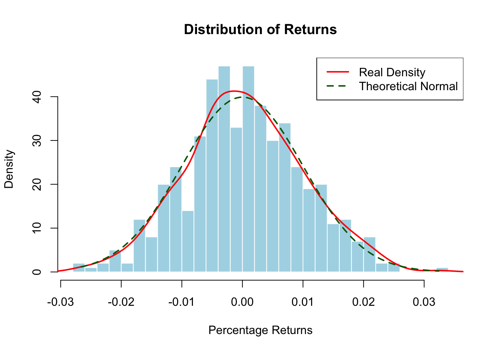
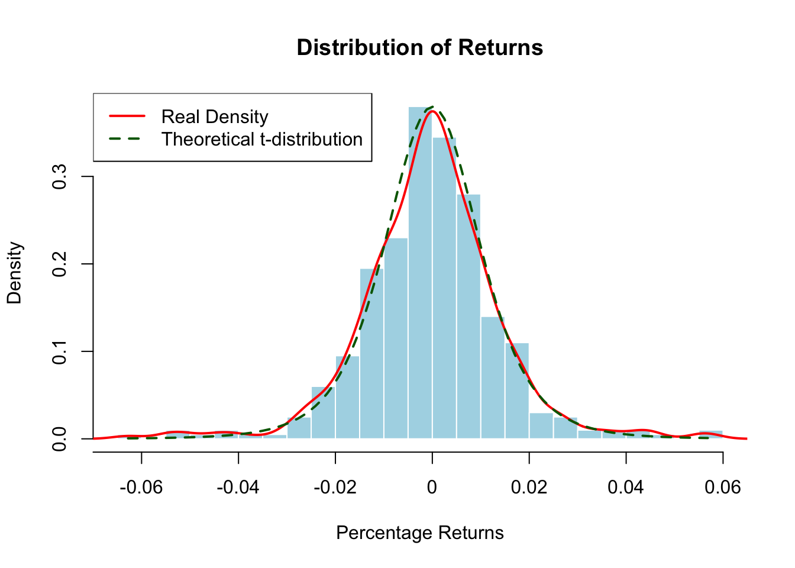
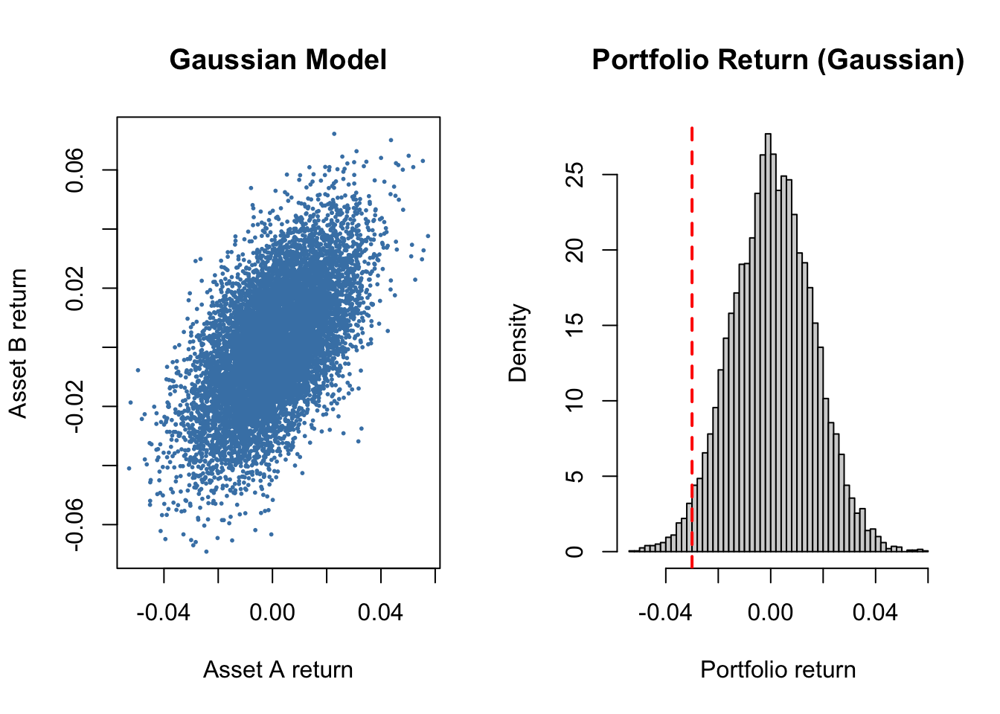
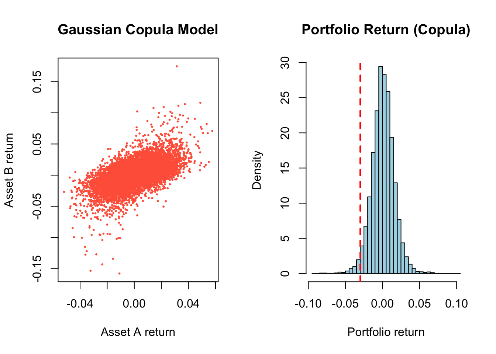
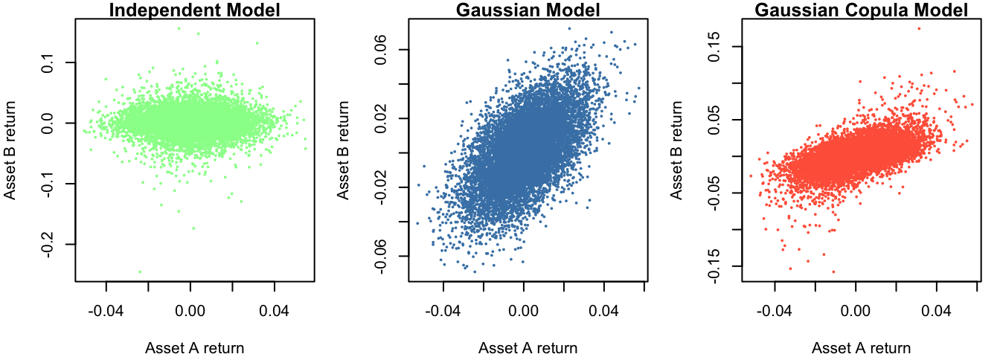
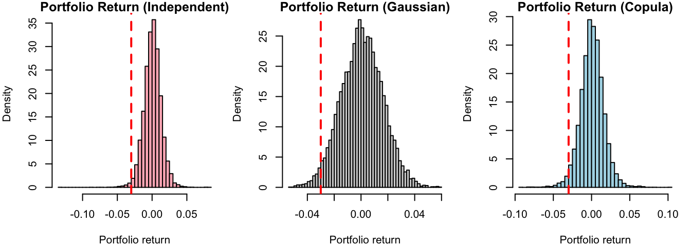

30 📈 Portfolio Risk Simulation
In this example, we study the distribution of returns, which describes how much an asset or portfolio gains or loses over time (e.g., daily returns).
Understanding this distribution helps answer questions such as:
- How large can losses be?
- How likely are extreme events?
- How does dependence between assets affect risk?
Theoretical Models
Traditionally, financial theory assumes that returns follow a normal (Gaussian) or lognormal distribution. For example, the Capital Asset Pricing Model (CAPM) and Black-Scholes option pricing rely on these assumptions. With normal assumption, we assume:
- most outcomes are close to the average (symmetric around the mean),
- extreme gains or losses are rare,
- dependence between assets is captured using correlation.
This assumption makes modelling and simulation straightforward.
Empirical Observations
In practice, returns often behave differently:
- Fat tails: Extreme events occur more often than predicted by a normal distribution.
- High peaks (leptokurtosis): Returns may be more concentrated around the mean.
- Skewness: Distributions may be asymmetric, with markets reacting differently to positive versus negative events (overreaction or underreaction).
- Dependency: Dependence between assets can become stronger during extreme events.
This means simple normal models may underestimate risk, especially for large losses.

Practical Applications
Analysing the distribution of returns is crucial for:
- Risk Assessment: Identifying the probability of extreme losses or gains and estimating potential drawdowns.
- Strategy Optimisation: Refining trading strategies to maximize returns while minimizing exposure to tail risks.
- Portfolio Management: Diversifying assets to reduce volatility and align with risk tolerance.
- Behavioural Insights: Understanding how investor reactions to extreme events can affect market outcomes.
Investors can mitigate tail risks by strategies that reduce exposure to extreme events, effectively shifting more returns toward the mean of the distribution.
Problem Statement
A financial analyst wants to model the joint daily returns of two assets in a portfolio, Asset A and Asset B, with equal weights of 50%. The analyst wants to estimate
- the mean and standard deviation of the portfolio return
- the 1% and 5% Value-at-Risk (VAR), and
- the probability of a large one-day portfolio loss.
Since the asset returns are dependent, simulating each asset separately would underestimate the risk of simultaneous losses. Therefore, the analyst considers three modelling approaches:
- a multivariate normal model as a baseline for correlated returns,
- a copula-based model to allow more flexible marginal distributions and dependence, especially under extreme market conditions, and
- an independent model as a benchmark.
The analyst then conduct data analysis to understand the distribution of returns for Asset A and Asset B.
Multivariate Normal Model
Model setup
The portfolio weights are
\[ w_1 = 0.5, \qquad w_2 = 0.5, \]
so the portfolio return is
\[ R_p = 0.5R_1 + 0.5R_2. \]
Based on the data analysis, the analyst assumes:
- \(R_1\) has a Normal marginal distribution, \(R_1 \sim N(0.0005, 0.015^2)\).
- \(R_2\) has a Normal marginal distribution, \(R_2 \sim N(0.0008, 0.02^2)\).
- Dependence is introduced via a covariance matrix with correlation \(\rho = 0.6\).
set.seed(1234)
library(MASS)
n <- 10000
rho <- 0.6
# Portfolio weights
w <- c(0.5, 0.5)
# Mean vector (daily returns)
mu <- c(0.0005, 0.0008)
# Standard deviations
sd1 <- 0.015
sd2 <- 0.02
# Covariance matrix
Sigma <- matrix(c(sd1^2, rho*sd1*sd2,
rho*sd1*sd2, sd2^2), 2, 2)
# Simulate correlated normal returns
R_gauss <- mvrnorm(n, mu = mu, Sigma = Sigma)
# Portfolio return
port_gauss <- R_gauss %*% w
# Risk summaries
risk_summary <- c(
Mean = mean(port_gauss), # mean of portfolio return
SD = sd(port_gauss), # standard devation of portfolio return
VaR_5 = quantile(port_gauss, 0.05), # 5% Value-at-Risk
VaR_1 = quantile(port_gauss, 0.01), # 1% Value-at-Risk
Prob_Loss_gt_3pct = mean(port_gauss < -0.03) # probability of losing more than 3% in one day
)
library(knitr)
kable(round(risk_summary, 4))| x | |
|---|---|
| Mean | 0.0008 |
| SD | 0.0155 |
| VaR_5.5% | -0.0248 |
| VaR_1.1% | -0.0352 |
| Prob_Loss_gt_3pct | 0.0232 |
par(mfrow = c(1, 2))
plot(R_gauss[,1], R_gauss[,2],
pch = 16, cex = 0.4, col = "steelblue",
main = "Gaussian Model",
xlab = "Asset A return", ylab = "Asset B return")
hist(port_gauss, breaks = 40, freq = FALSE, col = "lightgray",
main = "Portfolio Return (Gaussian)",
xlab = "Portfolio return")
abline(v = -0.03, col = "red", lwd = 2, lty = 2)
Copula-based Model
Model setup
The portfolio weights are
\[ w_1 = 0.5, \qquad w_2 = 0.5, \]
so the portfolio return is
\[ R_p = 0.5R_1 + 0.5R_2. \]
Based on the data analysis, the analyst assumes:
- \(R_1\) has a Normal marginal distribution, \(R_1 \sim N(0.0005, 0.015^2)\).
- \(R_2\) has a heavier-tailed \(t\) marginal distribution with 4 degrees of freedom, rescaled to have approximately standard deviation \(0.02\).
- Dependence is introduced using a Gaussian copula with correlation \(\rho = 0.6\).
set.seed(1234)
n <- 10000
rho <- 0.6
# Step 1: correlated standard normals
Sigma_cop <- matrix(c(1, rho,
rho, 1), 2, 2)
Z <- mvrnorm(n, mu = c(0, 0), Sigma = Sigma_cop)
# Step 2: convert to uniforms
U <- pnorm(Z)
# Step 3: apply inverse CDFs for chosen marginals
# Asset A: Normal marginal
X1 <- qnorm(U[,1], mean = 0.0005, sd = 0.015)
# Asset B: heavy-tailed t marginal
# Standard t(df=4) has variance df/(df-2) = 2, so divide by sqrt(2)
# to approximately standardise before scaling
X2 <- 0.0008 + 0.02 * (qt(U[,2], df = 4) / sqrt(2))
R_copula <- cbind(X1, X2)
# Portfolio return
port_copula <- R_copula %*% w
# Risk summaries
risk_summary2 <- c(
Mean = mean(port_copula), # mean of portfolio return
SD = sd(port_copula), # standard devation of portfolio return
VaR_5 = quantile(port_copula, 0.05), # 5% Value-at-Risk
VaR_1 = quantile(port_copula, 0.01), # 1% Value-at-Risk
Prob_Loss_gt_3pct = mean(port_copula < -0.03) # probability of losing more than 3% in one day
)
library(knitr)
kable(round(risk_summary2, 4))| x | |
|---|---|
| Mean | 0.0007 |
| SD | 0.0153 |
| VaR_5.5% | -0.0238 |
| VaR_1.1% | -0.0378 |
| Prob_Loss_gt_3pct | 0.0235 |
par(mfrow = c(1, 2))
plot(R_copula[,1], R_copula[,2],
pch = 16, cex = 0.4, col = "tomato",
main = "Gaussian Copula Model",
xlab = "Asset A return", ylab = "Asset B return")
hist(port_copula, breaks = 40, freq = FALSE, col = "lightblue",
main = "Portfolio Return (Copula)",
xlab = "Portfolio return")
abline(v = -0.03, col = "red", lwd = 2, lty = 2)
Comparison with Independent Model
Using the same model setup as Copula-based model, we simulate returns of Asset A and Asset B independently:
set.seed(1234)
R1_ind <- rnorm(n, mean = 0.0005, sd = 0.015)
R2_ind <- 0.0008 + 0.02 * (rt(n, df = 4) / sqrt(2))
R_port_ind <- 0.5 * R1_ind + 0.5 * R2_indpar(mfrow = c(1, 3), mar = c(4,4,1,1))
plot(R1_ind, R2_ind,
pch = 16, cex = 0.4, col = "palegreen",
main = "Independent Model",
xlab = "Asset A return", ylab = "Asset B return")
plot(R_gauss[,1], R_gauss[,2],
pch = 16, cex = 0.4, col = "steelblue",
main = "Gaussian Model",
xlab = "Asset A return", ylab = "Asset B return")
plot(R_copula[,1], R_copula[,2],
pch = 16, cex = 0.4, col = "tomato",
main = "Gaussian Copula Model",
xlab = "Asset A return", ylab = "Asset B return")
Scatterplots
- Independent model → circular cloud → no structure → returns move independently
- Gaussian model → elliptical cloud → linear dependence
- Copula model → similar dependence, but more extreme points → heavier tails visible
Copula captures non-normal behaviour, especially extremes.
par(mfrow = c(1, 3), mar = c(4,4,1,1))
hist(R_port_ind, breaks = 40, freq = FALSE, col = "lightpink",
main = "Portfolio Return (Independent)",
xlab = "Portfolio return")
abline(v = -0.03, col = "red", lwd = 2, lty = 2)
hist(port_gauss, breaks = 40, freq = FALSE, col = "lightgray",
main = "Portfolio Return (Gaussian)",
xlab = "Portfolio return")
abline(v = -0.03, col = "red", lwd = 2, lty = 2)
hist(port_copula, breaks = 40, freq = FALSE, col = "lightblue",
main = "Portfolio Return (Copula)",
xlab = "Portfolio return")
abline(v = -0.03, col = "red", lwd = 2, lty = 2)
Histograms
- Independent → narrow distribution
- Gaussian → wider spread
- Copula → similar spread, but fatter tails
The left tail (loss side) is clearly more pronounced under dependence.
comparison <- rbind(
Gaussian = c(
Mean = mean(port_gauss),
SD = sd(port_gauss),
VaR_5 = quantile(port_gauss, 0.05),
VaR_1 = quantile(port_gauss, 0.01),
Prob_Loss_gt_3pct = mean(port_gauss < -0.03)
),
Copula = c(
Mean = mean(port_copula),
SD = sd(port_copula),
VaR_5 = quantile(port_copula, 0.05),
VaR_1 = quantile(port_copula, 0.01),
Prob_Loss_gt_3pct = mean(port_copula < -0.03)
),
Independent = c(
Mean = mean(R_port_ind),
SD = sd(R_port_ind),
VaR_5 = quantile(R_port_ind, 0.05),
VaR_1 = quantile(R_port_ind, 0.01),
Prob_Loss_gt_3pct = mean(R_port_ind < -0.03)
)
)
kable(round(comparison, 4))| Mean | SD | VaR_5.5% | VaR_1.1% | Prob_Loss_gt_3pct | |
|---|---|---|---|---|---|
| Gaussian | 8e-04 | 0.0155 | -0.0248 | -0.0352 | 0.0232 |
| Copula | 7e-04 | 0.0153 | -0.0238 | -0.0378 | 0.0235 |
| Independent | 6e-04 | 0.0124 | -0.0193 | -0.0305 | 0.0106 |
Mean and Standard Deviation
- The means are very similar → expected return is not sensitive to dependence.
- The standard deviation increases significantly when dependence is introduced.
Dependence increases portfolio variability.
- When assets are independent → gains and losses partially cancel out.
- When assets are positively dependent → they move together → less diversification.
Value-at-Risk (VaR)
- Both dependent models produce more negative VaR than the independent case.
- The copula model has the worst 1% VaR.
Ignoring dependence underestimates risk. Heavy tails (copula model) increase extreme losses.
Note
Value-at-Risk (VaR) is a commonly used measure of downside risk (losses or left tail of the distribution). It answers the question:
“How bad can losses be, with a given level of confidence?”
Formally, the VaR at level \(\alpha\) (e.g., 5% or 1%) is the threshold such that:
\[ P(R_p \leq \text{VaR}_\alpha) = \alpha, \]
where \(R_p\) is the portfolio return.
Interpretation Examples
- VaR (5%) = −0.02 means there is a 5% chance that the portfolio return is worse than −2%.
- VaR (1%) = −0.04 means there is a 1% chance that the loss exceeds 4%.
Probability of Large Loss (> 3%)
- Dependence roughly doubles the probability of large losses.
- Copula and Gaussian are similar here — but:
The copula shows its effect more strongly in extreme tails (VaR 1%), not moderate losses.